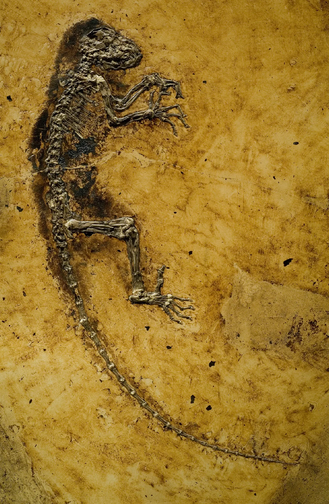
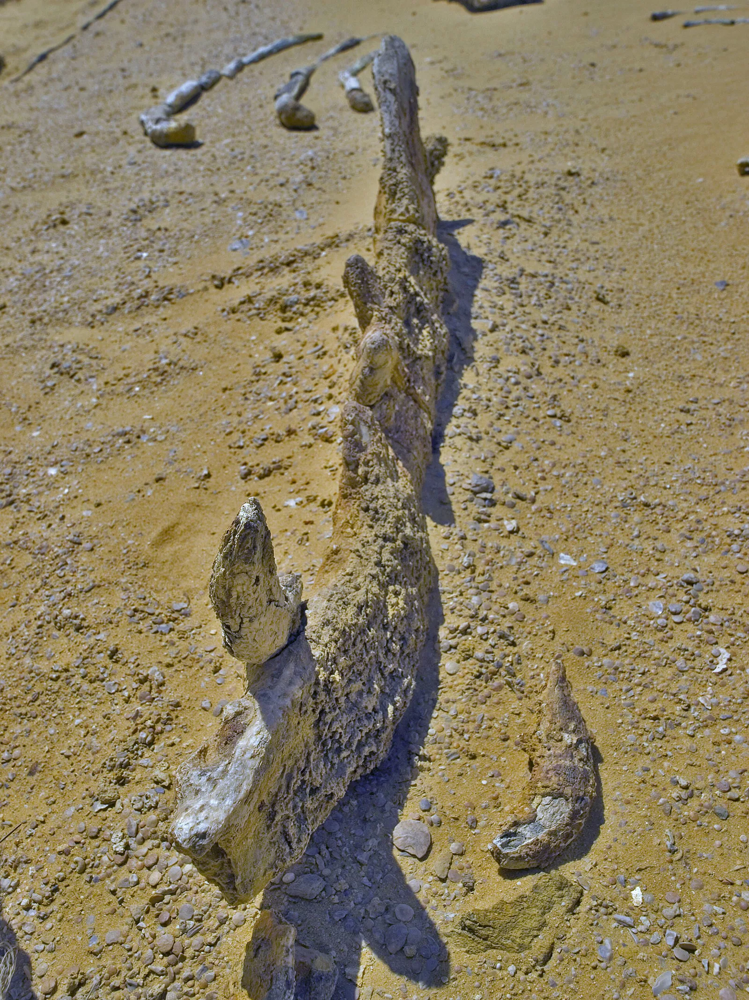
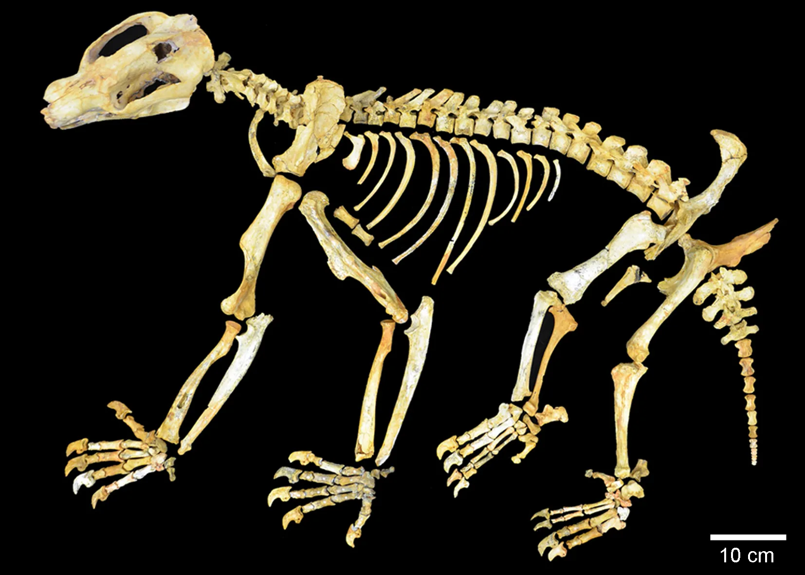
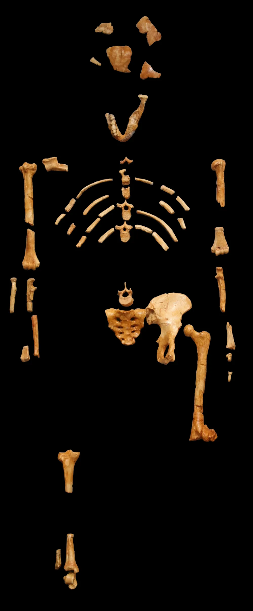
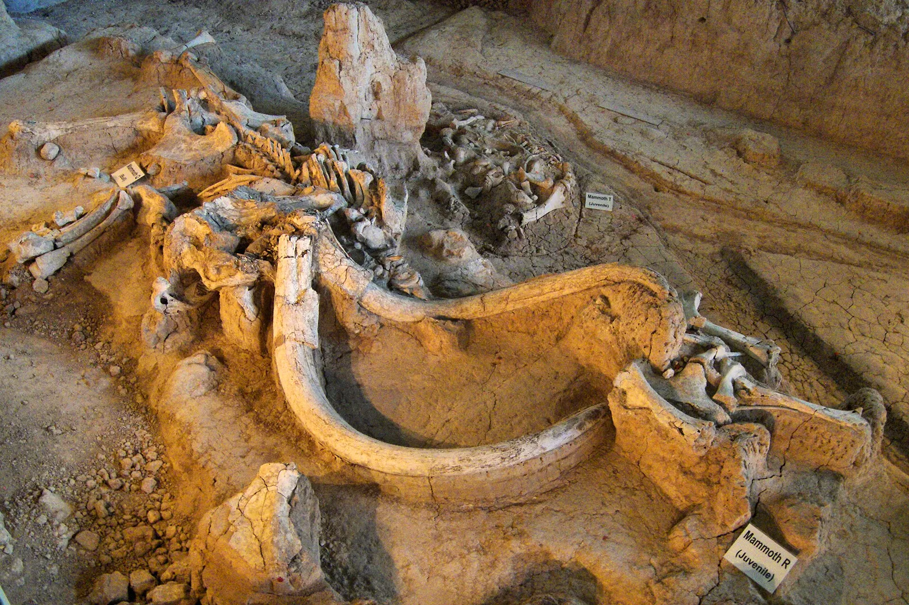
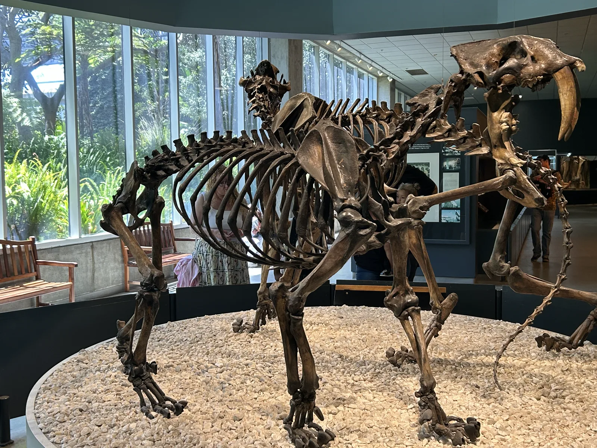
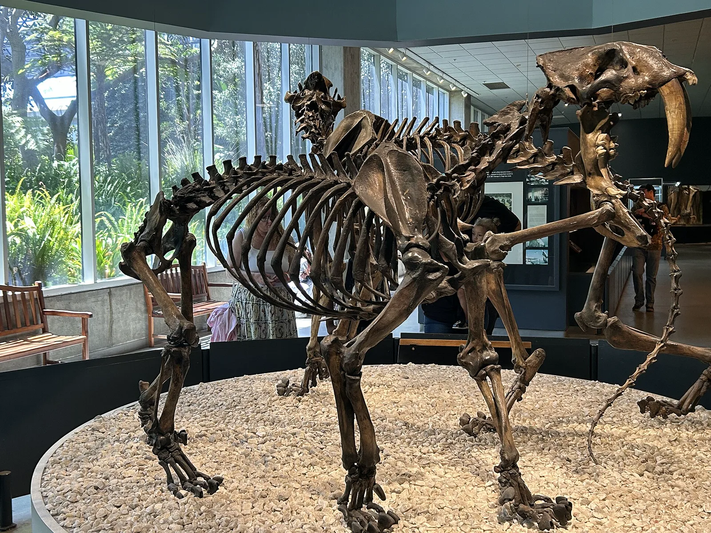

המשפטים על כל בעל חיים נשארו באנגלית, וממתינים לבדיקה.

Darwinius An early primate from a volcanic lake in Germany, about 48 million years ago.
Jens L. Franzen, Philip D. Gingerich, Jörg Habersetzer1, Jørn H. Hurum, Wighart von Koenigswald, B. Holly Smith, CC BY-SA 2.5, via Wikimedia Commons. The original file is 1118 pixels wide. This page serves 1118 pixels wide. עמוד הקובץ · מקור: Messel Pit visitor site. Linked from this site’s coin.

Wadi Al-Hitan Whales that still had hind legs, from the Late Eocene of Egypt, about 40 to 37 million years ago.
Tom Horton from Shanghai, China, CC BY-SA 2.0, via Wikimedia Commons. The original file is 2736 pixels wide. This page serves 1920 pixels wide, not enlarged. עמוד הקובץ · מקור: UNESCO World Heritage: Wadi Al-Hitan (Whale Valley). Linked from this site’s coin.

Nimbadon A wombat relative from Riversleigh. The coin dates those mammals to about 30 to 10 million years ago. This example is the Neogene part of that span. Naracoorte, on the same coin, is a later ice age.
Black KH, Camens AB, Archer M, Hand SJ, CC BY 2.5, via Wikimedia Commons. The original file is 1654 pixels wide. This page serves 1654 pixels wide. עמוד הקובץ · מקור: UNESCO World Heritage: Australian Fossil Mammal Sites. Linked from this site’s coin.

Lucy Australopithecus afarensis from Ethiopia, about 3.2 million years ago.
120, CC BY 2.5, via Wikimedia Commons. The original file is 1000 pixels wide. This page serves 1000 pixels wide. עמוד הקובץ · מקור: Smithsonian: Lucy (AL 288-1). Linked from this site’s coin.

Waco mammoths A nursery herd of Columbian mammoths in Texas, about 68,000 years ago.
Larry D. Moore, CC BY 4.0, via Wikimedia Commons. The original file is 2168 pixels wide. This page serves 1920 pixels wide, not enlarged. עמוד הקובץ · מקור: National Park Service: Waco Mammoth National Monument. Linked from this site’s coin.

Smilodon A saber-toothed cat, not a tiger. La Brea holds more than 2,000 skulls, from about 50,000 to 10,000 years ago.
TheUltimateGrass, CC0, via Wikimedia Commons. The original photograph is 4032 × 3024 pixels. This page serves that full width, plus 2560 and 1600, not enlarged. עמוד הקובץ · מקור: Florida Museum species page, which says more than 2,000 skulls, and the La Brea Tar Pits museum.

La Brea Tar Pits Asphalt trapped Ice Age animals in Los Angeles, about 50,000 to 10,000 years ago.
TheUltimateGrass, CC0, via Wikimedia Commons. The original file is 4032 pixels wide. This page serves 1920 pixels wide, not enlarged. עמוד הקובץ · מקור: La Brea Tar Pits & Museum. Linked from this site’s coin.